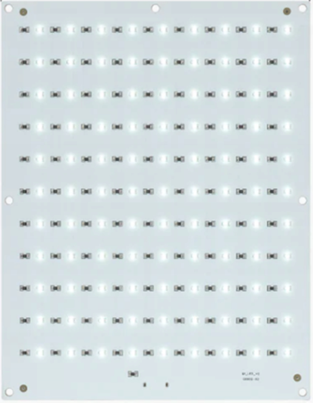
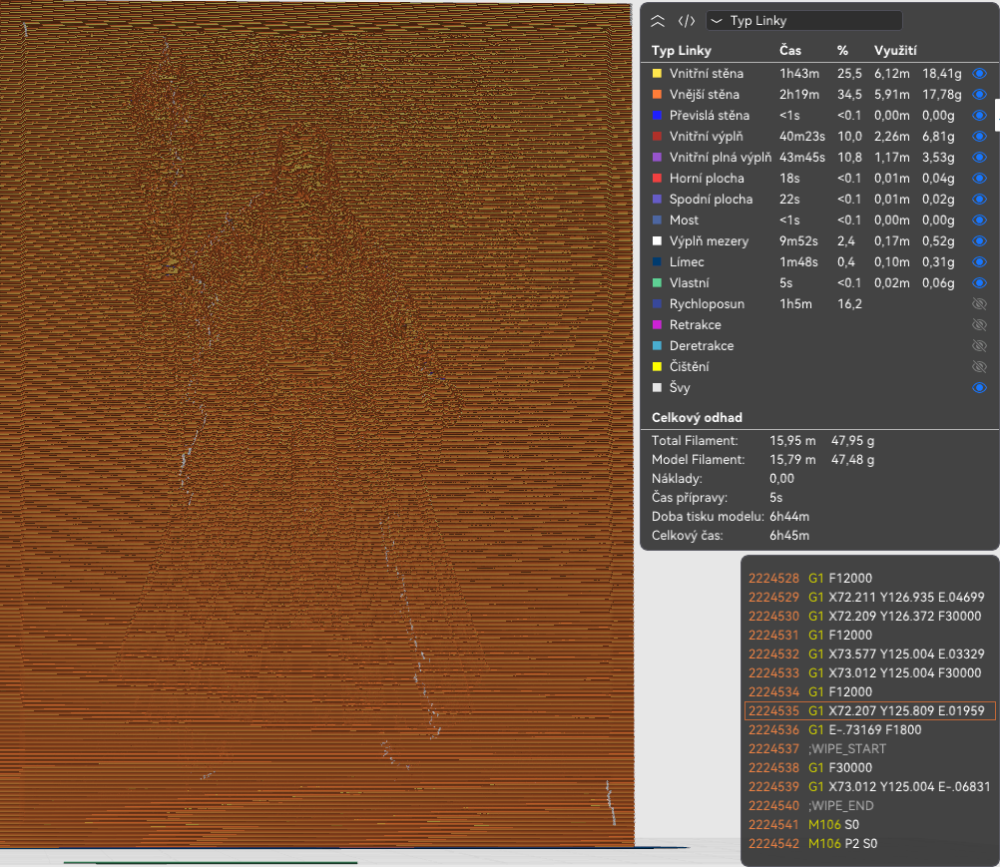
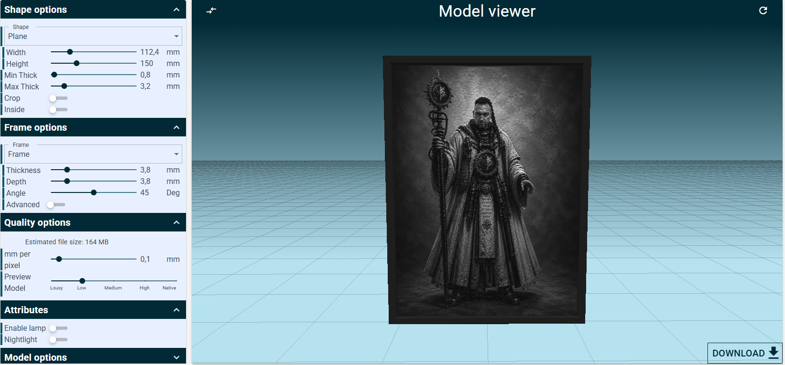
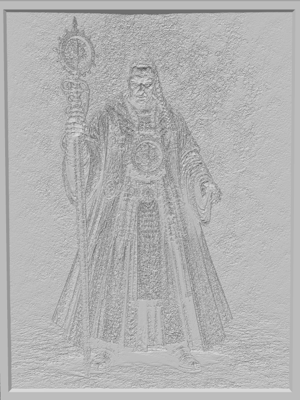
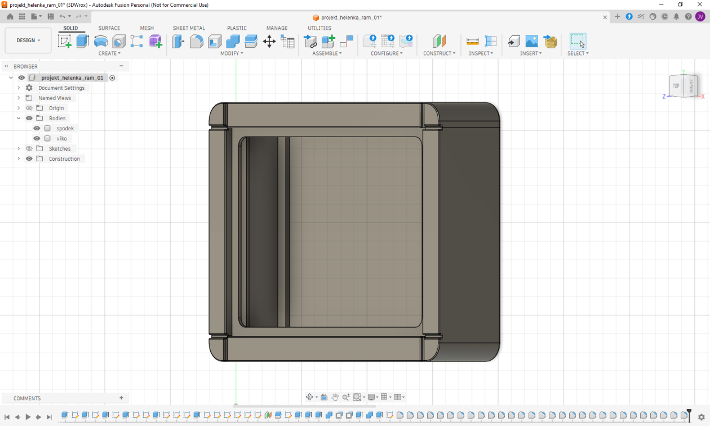

Litofan – projekt Helenka
Proměňte svou oblíbenou fotografii v jedinečný litofan – 3D tištěný obraz, který ožívá světlem. Projekt Helenka představuje vlastní produktovou řadu litofanů společnosti STC Luna, navrženou s důrazem na kvalitní 3D tisk, promyšlenou konstrukci a možnost vytvořit originální vzpomínku z vašich fotografií.
Co je litofan?
Litofan je speciální 3D tištěná destička, ve které obraz vzniká díky rozdílné tloušťce materiálu. Bez podsvícení připomíná jemný reliéf, po prosvícení světlem se však objeví věrný obraz s překvapivou hloubkou, kontrastem a množstvím detailů.
💡 Tip: Nejlepších výsledků dosáhnete s ostrou fotografií ve vysokém rozlišení. Ideální jsou snímky s dobrým osvětlením a dobře viditelnými obličeji.
Jak vzniká litofan?
Každý litofan vzniká jako zakázkový výrobek vytvořený podle vašich požadavků. Od výběru produktu až po finální kontrolu prochází několik výrobních kroků, které zajišťují kvalitní výsledek.
- Vyberete si produkt, který nejlépe odpovídá vašim představám.
- Nahrajete fotografie určené pro výrobu litofánu.
- Fotografie připravíme a optimalizujeme pro výrobu.
- Vytiskneme jednotlivé části produktu – litofánové destičky, rámečky a další komponenty podle zvolené konfigurace.
- Celý produkt sestavíme, zkontrolujeme a připravíme k odeslání.
- Hotový litofan bezpečně zabalíme a odešleme k vám.
Proč právě STC Luna?
Projekt Helenka nevznikl jako běžný 3D model ke stažení. Každý litofan vyrábíme jako vlastní produkt společnosti STC Luna s důrazem na kvalitu, spolehlivost a dlouhodobou udržitelnost. Každá objednávka prochází kontrolou ještě před zahájením výroby.
- 🖼️ Zakázková výroba podle vašich fotografií.
- 🛠️ Vlastní konstrukce navržená společností STC Luna.
- 🖨️ Výroba na moderních 3D tiskárnách.
- 💡 Možnost LED podsvícení podle zvoleného produktu.
- 📦 Pečlivá kontrola a bezpečné zabalení před odesláním.
Galerie
Každý litofan je originál. Prohlédněte si ukázky výrobků vytvořených v rámci projektu Helenka a inspirujte se možnostmi zpracování vašich vlastních fotografií.






Líbí se vám výsledek?
Prohlédněte si naši první produktovou řadu a vytvořte si vlastní
litofan z fotografie.
Naše produkty
Projekt Helenka se postupně rozrůstá o nové litofanové produkty. Každý z nich nabízí odlišnou konstrukci, možnosti konfigurace i způsob použití. Vyberte si variantu, která nejlépe odpovídá vašim představám.

Litofan – Basic
Základní produktová varianta projektu Helenka. Nabízí možnost vytvořit vlastní litofan z fotografie, zvolit konfiguraci rámečku, litofánových destiček i LED podsvícení.
Přejít na produkt